Suppose a general-population survey shows that people who exercise less, weigh more. You don't have any known direction of time in the data - you don't know which came first, the increased weight or the diminished exercise. And you didn't randomly assign half the population to exercise less; you just surveyed an existing population.
The statisticians who discovered causality were trying to find a way to distinguish, within survey data, the direction of cause and effect - whether, as common sense would have it, more obese people exercise less because they find physical activity less rewarding; or whether, as in the virtue theory of metabolism [http://en.wikipedia.org/wiki/Just-world_hypothesis], lack of exercise actually causes weight gain due to divine punishment for the sin of sloth.
| 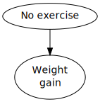 | vs. | 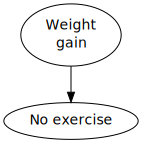 |
The usual way to resolve this sort of question is by randomized intervention. If you randomly assign half your experimental subjects to exercise more, and afterward the increased-exercise group doesn't lose any weight compared to the control group [1] [http://lesswrong.com/lw/ev3/causal_diagrams_and_causal_models/#note1], you could rule out causality from exercise to weight, and conclude that the correlation between weight and exercise is probably due to physical activity being less fun when you're overweight [3] [http://lesswrong.com/lw/ev3/causal_diagrams_and_causal_models/#note3]. The question is whether you can get causal data without interventions.
For a long time, the conventional wisdom in philosophy was that this was impossible unless you knew the direction of time and knew which event had happened first. Among some philosophers of science, there was a belief that the "direction of causality" was a meaningless question, and that in the universe itself there were only correlations - that "cause and effect" was something unobservable and undefinable, that only unsophisticated non-statisticians believed in due to their lack of formal training:
"The law of causality, I believe, like much that passes muster among philosophers, is a relic of a bygone age, surviving, like the monarchy, only because it is erroneously supposed to do no harm." -- Bertrand Russell (he later changed his mind)
"Beyond such discarded fundamentals as 'matter' and 'force' lies still another fetish among the inscrutable arcana of modern science, namely, the category of cause and effect." -- Karl Pearson
The famous statistician Fisher, who was also a smoker, testified before Congress that the correlation between smoking and lung cancer couldn't prove that the former caused the latter. We have remnants of this type of reasoning in old-school "Correlation does not imply causation", without the now-standard appendix, "But it sure is a hint [http://xkcd.com/552/]".
This skepticism was overturned by a surprisingly simple mathematical observation.
Let's say there are three variables in the survey data: Weight, how much the person exercises, and how much time they spend on the Internet.
For simplicity, we'll have these three variables be binary, yes-or-no observations: Y or N for whether the person has a BMI over 25, Y or N for whether they exercised at least twice in the last week, and Y or N for whether they've checked Reddit in the last 72 hours.
Now let's say our gathered data looks like this:
| Overweight | Exercise | Internet | # |
|---|---|---|---|
| Y | Y | Y | 1,119 |
| Y | Y | N | 16,104 |
| Y | N | Y | 11,121 |
| Y | N | N | 60,032 |
| N | Y | Y | 18,102 |
| N | Y | N | 132,111 |
| N | N | Y | 29,120 |
| N | N | N | 155,033 |
And lo, merely by eyeballing this data -
(which is totally made up, so don't go actually believing the conclusion I'm about to draw)
- we now realize that being overweight and spending time on the Internet both cause you to exercise less, presumably because exercise is less fun and you have more alternative things to do, but exercising has no causal influence on body weight or Internet use.
"What!" you cry. "How can you tell that just by inspecting those numbers? You can't say that exercise isn't correlated to body weight - if you just look at all the members of the population who exercise, they clearly have lower weights. 10% of exercisers are overweight, vs. 28% of non-exercisers. How could you rule out the obvious causal explanation for that correlation, just by looking at this data?"
There's a wee bit of math involved. It's simple math - the part we'll use doesn't involve solving equations or complicated proofs -but we do have to introduce a wee bit of novel math to explain how the heck we got there from here.
Let me start with a question that turned out - to the surprise of many investigators involved - to be highly related to the issue we've just addressed.
Suppose that earthquakes and burglars can both set off burglar alarms. If the burglar alarm in your house goes off, it might be because of an actual burglar, but it might also be because a minor earthquake rocked your house and triggered a few sensors. Early investigators in Artificial Intelligence, who were trying to represent all high-level events using primitive tokens in a first-order logic (for reasons of historical stupidity we won't go into) were stymied by the following apparent paradox:
-
If you tell me that my burglar alarm went off, I infer a burglar, which I will represent in my first-order-logical database using a theorem ⊢ ALARM → BURGLAR. (The symbol "⊢" is called "turnstile [http://en.wikipedia.org/wiki/Turnstile_(symbol)]" and means "the logical system asserts that".)
-
If an earthquake occurs, it will set off burglar alarms. I shall represent this using the theorem ⊢ EARTHQUAKE → ALARM, or "earthquake implies alarm".
-
If you tell me that my alarm went off, and then further tell me that an earthquake occurred, it explains away my burglar alarm going off. I don't need to explain the alarm by a burglar, because the alarm has already been explained by the earthquake. I conclude there was no burglar. I shall represent this by adding a theorem which says ⊢ (EARTHQUAKE & ALARM) → NOT BURGLAR.
Which represents a logical contradiction, and for a while there were attempts to develop "non-monotonic logics" so that you could retract conclusions given additional data. This didn't work very well, since the underlying structure of reasoning was a terrible fit for the structure of classical logic, even when mutated. [http://lesswrong.com/lw/vt/the_nature_of_logic/]
Just changing certainties to quantitative probabilities can fix many problems with classical logic, and one might think that this case was likewise easily fixed.
Namely, just write a probability table of all possible combinations of earthquake or ¬earthquake, burglar or ¬burglar, and alarm or ¬alarm (where ¬ is the logical negation symbol), with the following entries:
| Burglar | Earthquake | Alarm | % |
|---|---|---|---|
| b | e | a | .000162 |
| b | e | ¬a | .0000085 |
| b | ¬e | a | .0151 |
| b | ¬e | ¬a | .00168 |
| ¬b | e | a | .0078 |
| ¬b | e | ¬a | .002 |
| ¬b | ¬e | a | .00097 |
| ¬b | ¬e | ¬a | .972 |
Using the operations of marginalization and conditionalization, we get the desired reasoning back out:
Let's start with the probability of a burglar given an alarm, p(burglar|alarm). By the law of conditional probability,
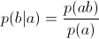
i.e. the relative fraction of cases where there's an alarm and a burglar, within the set of all cases where there's an alarm.
The table doesn't directly tell us p(alarm & burglar)/p(alarm), but by the law of marginal probability,
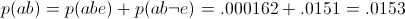
Similarly, to get the probability of an alarm going off, p(alarm), we add up all the different sets of events that involve an alarm going off - entries 1, 3, 5, and 7 in the table.
So the entire set of calculations looks like this:
-
If I hear a burglar alarm, I conclude there was probably (63%) a burglar.
-
If I learn about an earthquake, I conclude there was probably (80%) an alarm.
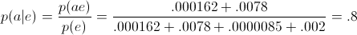
-
I hear about an alarm and then hear about an earthquake; I conclude there was probably (98%) no burglar.
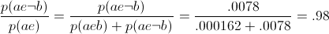
Thus, a joint probability distribution is indeed capable of representing the reasoning-behaviors we want.
So is our problem solved? Our work done?
Not in real life or real Artificial Intelligence work. The problem is that this solution doesn't scale. Boy howdy, does it not scale! If you have a model containing forty binary variables - alert readers may notice that the observed physical universe contains at least forty things - and you try to write out the joint probability distribution over all combinations of those variables, it looks like this:
| .0000000000112 | YYYYYYYYYYYYYYYYYYYYYYYYYYYYYYYYYYYYYYYY |
| .000000000000034 | YYYYYYYYYYYYYYYYYYYYYYYYYYYYYYYYYYYYYYYN |
| .00000000000991 | YYYYYYYYYYYYYYYYYYYYYYYYYYYYYYYYYYYYYYNY |
| .00000000000532 | YYYYYYYYYYYYYYYYYYYYYYYYYYYYYYYYYYYYYYNN |
| .000000000145 | YYYYYYYYYYYYYYYYYYYYYYYYYYYYYYYYYYYYYNYY |
| ... | ... |
(1,099,511,627,776 entries)
This isn't merely a storage problem. In terms of storage, a trillion entries is just a terabyte or three. The real problem is learning a table like that. You have to deduce 1,099,511,627,776 floating-point probabilities from observed data, and the only constraint on this giant table is that all the probabilities must sum to exactly 1.0, a problem with 1,099,511,627,775 degrees of freedom. (If you know the first 1,099,511,627,775 numbers, you can deduce the 1,099,511,627,776th number using the constraint that they all sum to exactly 1.0.) It's not the storage cost that kills you in a problem with forty variables, it's the difficulty of gathering enough observational data to constrain a trillion different parameters. And in a universe containing seventy things, things are even worse.
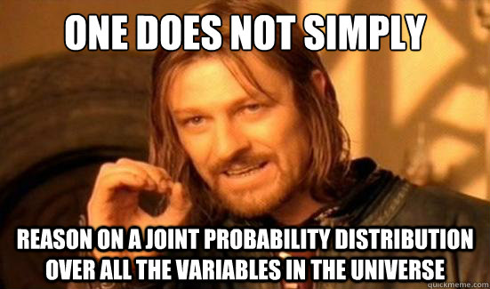
So instead, suppose we approached the earthquake-burglar problem by trying to specify probabilities in a format where... never mind, it's easier to just give an example before stating abstract rules.
First let's add, for purposes of further illustration, a new variable, "Recession", whether or not there's a depressed economy at the time. Now suppose that:
-
The probability of an earthquake is 0.01.
-
The probability of a recession at any given time is 0.33 (or 1/3).
-
The probability of a burglary given a recession is 0.04; or, given no recession, 0.01.
-
An earthquake is 0.8 likely to set off your burglar alarm; a burglar is 0.9 likely to set off your burglar alarm. And - we can't compute this model fully without this info - the combination of a burglar and an earthquake is 0.95 likely to set off the alarm; and in the absence of either burglars or earthquakes, your alarm has a 0.001 chance of going off anyway.
| 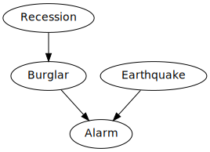 |
|
| ||||||||||||||||||||
| ||||||||||||||||||||||
|
According to this model, if you want to know "The probability that an earthquake occurs" - just the probability of that one variable, without talking about any others - you can directly look up p(e) = .01. On the other hand, if you want to know the probability of a burglar striking, you have to first look up the probability of a recession (.33), and then p(b|r) and p(b|¬r), and sum up p(b|r)*p(r) + p(b|¬r)*p(¬r) to get a net probability of .01*.66 + .04*.33 = .02 = p(b), a 2% probability that a burglar is around at some random time.
If we want to compute the joint probability of four values for all four variables - for example, the probability that there is no earthquake and no recession and a burglar and the alarm goes off - this causal model computes this joint probability as the product:
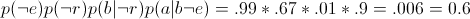
In general, to go from a causal model to a probability distribution, we compute, for each setting of all the variables, the product
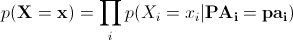
multiplying together the conditional probability of each variable given the values of its immediate parents. (If a node has no parents, the probability table for it has just an unconditional probability, like "the chance of an earthquake is .01".)
This is a causal model because it corresponds to a world in which each event is directly caused by only a small set of other events, its parent nodes in the graph. In this model, a recession can indirectly cause an alarm to go off - the recession increases the probability of a burglar, who in turn sets off an alarm - but the recession only acts on the alarm through the intermediate cause of the burglar. (Contrast to a model where recessions set off burglar alarms directly.)
| 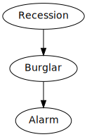 | vs. | 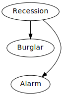 |
The first diagram implies that once we already know whether or not there's a burglar, we don't learn anything more about the probability of a burglar alarm, if we find out that there's a recession:
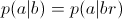
This is a fundamental illustration of the locality of causality - once I know there's a burglar, I know everything I need to know to calculate the probability that there's an alarm. Knowing the state of Burglar screens off anything that Recession could tell me about Alarm - even though, if I didn't know the value of the Burglar variable, Recessions would appear to be statistically correlated with Alarms. The present screens off the past from the future; in a causal system, if you know the exact, complete state of the present, the state of the past has no further physical relevance to computing the future. It's how, in a system containing many correlations (like the recession-alarm correlation), it's still possible to compute each variable just by looking at a small number of immediate neighbors.
Constraints like this are also how we can store a causal model - and much more importantly, learn a causal model - with many fewer parameters than the naked, raw, joint probability distribution.
Let's illustrate this using a simplified version of this graph, which only talks about earthquakes and recessions. We could consider three hypothetical causal diagrams over only these two variables:
| |||||
| |||||
p(E&R)=p(E)p(R) | |||||
| 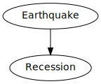 |
| |||||||
| ||||||||
p(E&R) = p(E)p(R|E) | ||||||||
| 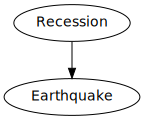 |
| |||||||
| ||||||||
p(E&R) = p(R)p(E|R) | ||||||||
Let's consider the first hypothesis - that there's no causal arrows connecting earthquakes and recessions. If we build a causal model around this diagram, it has 2 real degrees of freedom - a degree of freedom for saying that the probability of an earthquake is, say, 29% (and hence that the probability of not-earthquake is necessarily 71%), and another degree of freedom for saying that the probability of a recession is 3% (and hence the probability of not-recession is constrained to be 97%).
On the other hand, the full joint probability distribution would have 3 degrees of freedom - a free choice of (earthquake&recession), a choice of p(earthquake&¬recession), a choice of p(¬earthquake&recession), and then a constrained p(¬earthquake&¬recession) which must be equal to 1 minus the sum of the other three, so that all four probabilities sum to 1.0.
By the pigeonhole principle (you can't fit 3 pigeons into 2 pigeonholes) there must be some joint probability distributions which cannot be represented in the first causal structure. This means the first causal structure is falsifiable; there's survey data we can get which would lead us to reject it as a hypothesis. In particular, the first causal model requires:
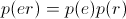
or equivalently
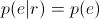
or equivalently
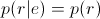
which is a conditional independence constraint - it says that learning about recessions doesn't tell us anything about the probability of an earthquake or vice versa. If we find that earthquakes and recessions are highly correlated in the observed data - if earthquakes and recessions go together, or earthquakes and the absence of recessions go together - it falsifies the first causal model.
For example, let's say that in your state, an earthquake is 0.1 probable per year and a recession is 0.2 probable. If we suppose that earthquakes don't cause recessions, earthquakes are not an effect of recessions, and that there aren't hidden aliens which produce both earthquakes and recessions, then we should find that years in which there are earthquakes and recessions happen around 0.02 of the time. If instead earthquakes and recessions happen 0.08 of the time, then the probability of a recession given an earthquake is 0.8 instead of 0.2, and we should much more strongly expect a recession any time we are told that an earthquake has occurred. Given enough samples, this falsifies the theory that these factors are unconnected; or rather, the more samples we have, the more we disbelieve that the two events are unconnected.
On the other hand, we can't tell apart the second two possibilities from survey data, because both causal models have 3 degrees of freedom, which is the size of the full joint probability distribution. (In general, fully connected causal graphs in which there's a line between every pair of nodes, have the same number of degrees of freedom as a raw joint distribution - and 2 nodes connected by 1 line are "fully connected".) We can't tell if earthquakes are 0.1 likely and cause recessions with 0.8 probability, or recessions are 0.2 likely and cause earthquakes with 0.4 probability (or if there are hidden aliens which on 6% of years show up and cause earthquakes and recessions with probability 1).
With larger universes, the difference between causal models and joint probability distributions becomes a lot more striking. If we're trying to reason about a million binary variables connected in a huge causal model, and each variable could have up to four direct 'parents' - four other variables that directly exert a causal effect on it - then the total number of free parameters would be at most... 16 million!
The number of free parameters in a raw joint probability distribution over a million binary variables would be 21,000,000. Minus one.
So causal models which are less than fully connected - in which most objects in the universe are not the direct cause or direct effect of everything else in the universe - are very strongly falsifiable; they only allow probability distributions (hence, observed frequencies) in an infinitesimally tiny range of all possible joint probability tables. Causal models very strongly constrain anticipation [http://lesswrong.com/lw/i3/making_beliefs_pay_rent_in_anticipated_experiences/] - disallow almost all possible patterns of observed frequencies - and gain mighty Bayesian advantages [http://yudkowsky.net/rational/technical] when these predictions come true.
To see this effect at work, let's consider the three variables Recession, Burglar, and Alarm.
| Alarm | Burglar | Recession | % |
|---|---|---|---|
| Y | Y | Y | .012 |
| N | Y | Y | .0013 |
| Y | N | Y | .00287 |
| N | N | Y | .317 |
| Y | Y | N | .003 |
| N | Y | N | .000333 |
| Y | N | N | .00591 |
| N | N | N | .654 |
All three variables seem correlated to each other when considered two at a time. For example, if we consider Recessions and Alarms, they should seem correlated because recessions cause burglars which cause alarms. If we learn there was an alarm, for example, we conclude it's more probable that there was a recession. So since all three variables are correlated, can we distinguish between, say, these three causal models?
| 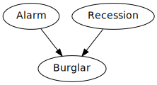 | 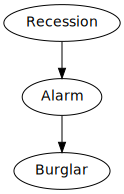 | |
| 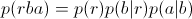 | 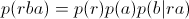 | 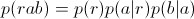 |
Yes we can! Among these causal models, the prediction which only the first model makes, which is not shared by either of the other two, is that once we know whether a burglar is there, we learn nothing more about whether there was an alarm by finding out that there was a recession, since recessions only affect alarms through the intermediary of burglars:
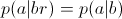
But the third model, in which recessions directly cause alarms, which only then cause burglars, does not have this property. If I know that a burglar has appeared, it's likely that an alarm caused the burglar - but it's even more likely that there was an alarm, if there was a recession around to cause the alarm! So the third model predicts:
And in the second model, where alarms and recessions both cause burglars, we again don't have the conditional independence. If we know that there's a burglar, then we think that either an alarm or a recession caused it; and if we're told that there's an alarm, we'd conclude it was less likely that there was a recession, since the recession had been explained away.
(This may seem a bit clearer by considering the scenario B->A<-E, where burglars and earthquakes both cause alarms. If we're told the value of the bottom node, that there was an alarm, the probability of there being a burglar is not independent of whether we're told there was an earthquake - the two top nodes are not conditionally independent once we condition on the bottom node.)
On the other hand, we can't tell the difference between:
vs. | 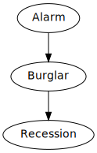 | vs. | 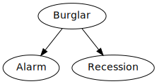 |
using only this data and no other variables, because all three causal structures predict the same pattern of conditional dependence and independence - three variables which all appear mutually correlated, but Alarm and Recession become independent once you condition on Burglar.
Being able to read off patterns of conditional dependence and independence is an art known as "D-separation", and if you're good at it you can glance at a diagram like this...
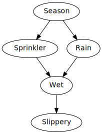
...and see that, once we already know the Season, whether the Sprinkler is on and whether it is Raining are conditionally independent of each other - if we're told that it's Raining we conclude nothing about whether or not the Sprinkler is on. But if we then further observe that the sidewalk is Slippery, then Sprinkler and Rain become conditionally dependent once more, because if the Sidewalk is Slippery then it is probably Wet and this can be explained by either the Sprinkler or the Rain but probably not both, i.e. if we're told that it's Raining we conclude that it's less likely that the Sprinkler was on.
Okay, back to the obesity-exercise-Internet example. You may recall that we had the following observed frequencies:
| Overweight | Exercise | Internet | # |
|---|---|---|---|
| Y | Y | Y | 1,119 |
| Y | Y | N | 16,104 |
| Y | N | Y | 11,121 |
| Y | N | N | 60,032 |
| N | Y | Y | 18,102 |
| N | Y | N | 132,111 |
| N | N | Y | 29,120 |
| N | N | N | 155,033 |
Do you see where this is going?
"Er," you reply, "Maybe if I had a calculator and ten minutes... you want to just go ahead and spell it out?"
Sure! First, we marginalize over the 'exercise' variable to get the table for just weight and Internet use. We do this by taking the 1,119 people who are YYY, overweight and Reddit users and exercising, and the 11,121 people who are overweight and non-exercising and Reddit users, YNY, and adding them together to get 12,240 total people who are overweight Reddit users:
| Overweight | Internet | # |
|---|---|---|
| Y | Y | 12,240 |
| Y | N | 76,136 |
| N | Y | 47,222 |
| N | N | 287,144 |
"And then?"
Well, that suggests that the probability of using Reddit, given that your weight is normal, is the same as the probability that you use Reddit, given that you're overweight. 47,222 out of 334,366 normal-weight people use Reddit, and 12,240 out of 88,376 overweight people use Reddit. That's about 14% either way.
"And so we conclude?"
Well, first we conclude it's not particularly likely that using Reddit causes weight gain, or that being overweight causes people to use Reddit:
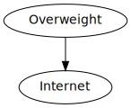 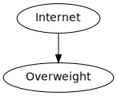
If either of those causal links existed, those two variables should be correlated. We shouldn't find the lack of correlation or conditional independence that we just discovered.
Next, imagine that the real causal graph looked like this:
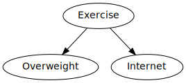
In this graph, exercising causes you to be less likely to be overweight (due to the virtue theory of metabolism), and exercising causes you to spend less time on the Internet (because you have less time for it).
But in this case we should not see that the groups who are/aren't overweight have the same probability of spending time on Reddit. There should be an outsized group of people who are both normal-weight and non-Redditors (because they exercise), and an outsized group of non-exercisers who are overweight and Reddit-using.
So that causal graph is also ruled out by the data, as are others like:
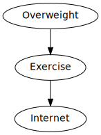 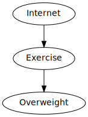 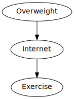
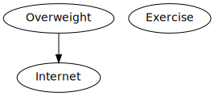
Leaving only this causal graph:
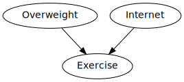
Which says that weight and Internet use exert causal effects on exercise, but exercise doesn't causally affect either.
All this discipline was invented and systematized by Judea Pearl, Peter Spirtes, Thomas Verma, and a number of other people in the 1980s and you should be quite impressed by their accomplishment, because before then, inferring causality from correlation was thought to be a fundamentally unsolvable problem. The standard volume on causal structure is Causality by Judea Pearl.
Causal models (with specific probabilities attached) are sometimes known as "Bayesian networks" or "Bayes nets", since they were invented by Bayesians and make use of Bayes's Theorem. They have all sorts of neat computational advantages which are far beyond the scope of this introduction - e.g. in many cases you can split up a Bayesian network into parts, put each of the parts on its own computer processor, and then update on three different pieces of evidence at once using a neatly local message-passing algorithm in which each node talks only to its immediate neighbors and when all the updates are finished propagating the whole network has settled into the correct state. For more on this see Judea Pearl's Probabilistic Reasoning in Intelligent Systems: Networks of Plausible Inference which is the original book on Bayes nets and still the best introduction I've personally happened to read.
[http://lesswrong.com/lw/ev3/causal_diagrams_and_causal_models/#note1back] [1] [http://lesswrong.com/lw/ev3/causal_diagrams_and_causal_models/#note1back] Somewhat to my own shame, I must admit to ignoring my own observations in this department - even after I saw no discernible effect on my weight or my musculature from aerobic exercise and strength training 2 hours a day 3 times a week, I didn't really start believing that the virtue theory of metabolism was wrong [2] [http://lesswrong.com/lw/ev3/causal_diagrams_and_causal_models/#note2] until after other [http://en.wikipedia.org/wiki/Gary_Taubes] people [http://sethroberts.net/] had started [http://lesswrong.com/lw/mb/lonely_dissent/] the skeptical dogpile.
[http://lesswrong.com/lw/ev3/causal_diagrams_and_causal_models/#note2back] [2] [http://lesswrong.com/lw/ev3/causal_diagrams_and_causal_models/#note2back] I should mention, though, that I have confirmed a personal effect where eating enough cookies (at a convention where no protein is available) will cause weight gain afterward. There's no other discernible correlation between my carbs/protein/fat allocations and weight gain, just that eating sweets in large quantities can cause weight gain afterward. This admittedly does bear with the straight-out virtue theory of metabolism, i.e., eating pleasurable foods is sinful weakness and hence punished with fat.
[http://lesswrong.com/lw/ev3/causal_diagrams_and_causal_models/#note3back] [3] [http://lesswrong.com/lw/ev3/causal_diagrams_and_causal_models/#note3back] Or there might be some hidden third factor, a gene which causes both fat and non-exercise. By Occam's Razor this is more complicated and its probability is penalized accordingly, but we can't actually rule it out. It is obviously impossible to do the converse experiment where half the subjects are randomly assigned lower weights, since there's no known intervention which can cause weight loss.
Mainstream status: This is meant to be an introduction to completely bog-standard Bayesian networks, causal models, and causal diagrams. Any departures from mainstream academic views are errors and should be flagged accordingly.
Part of the sequence Highly Advanced Epistemology 101 for Beginners [http://wiki.lesswrong.com/wiki/Highly_Advanced_Epistemology_101_for_Beginners]
Next post: "Stuff That Makes Stuff Happen [http://lesswrong.com/lw/ezu/stuff_that_makes_stuff_happen/]"
Previous post: "The Fabric of Real Things [http://lesswrong.com/lw/eva/the_fabric_of_real_things/]"